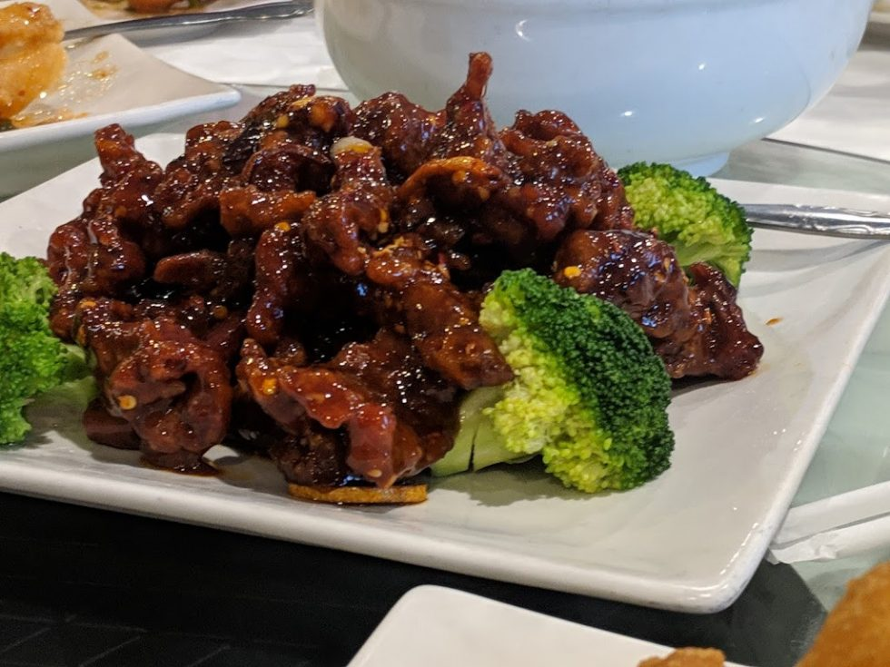

老四川聚香园 (Trizest)
正统硬核川菜整桌 ~$99 ($24.75/人)
🥢 风味渊源与深度解析
整个底特律乃至密歇根华人老饕圈里提起川菜绕不开的标杆老店。这里不是做给老美改良的甜酸中餐，而是由地道四川老师傅掌勺、以重油猛火与纯正川香见长的硬核川菜馆。后厨花椒与红油的焦香一进门就能闻到。
看家硬菜歌乐山辣子鸡，红油干辣椒堆满大盘，鸡肉切小丁油炸至极其酥脆，花椒麻劲与辣椒焦香完全渗透到骨肉里，越嚼越香；水煮活鱼片用大瓷盆装盛，滚烫的热红油兜头泼在干辣椒、蒜蓉与鲜嫩鱼片上，底下铺满吸饱麻辣汤汁的爽脆黄豆芽，拌米饭堪称一绝；火候到位的孜然爆炒羊肉带有极强的铁板大火镬气，外焦里嫩孜然香气扑鼻。
到店提醒：属于千禧年代传统中式餐馆风格，店面偏旧，前台跑堂节奏飞快；如果平时不能吃大辣，点单时务必主动要求“微辣”，默认辣度后劲很足；菜量巨大，4 人聚餐性价比极高。